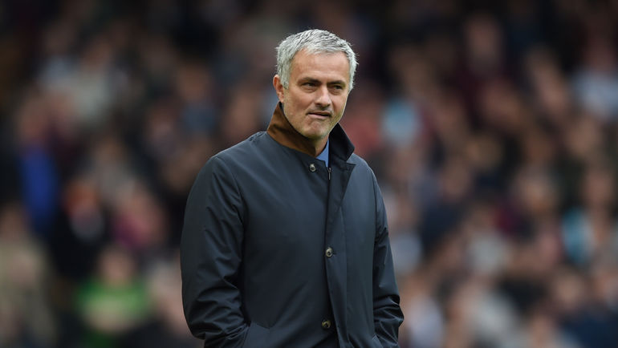
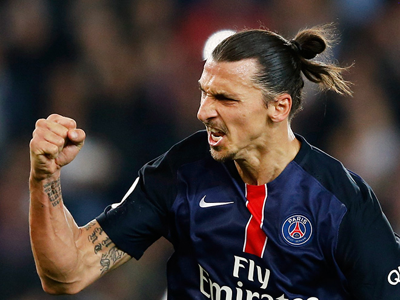
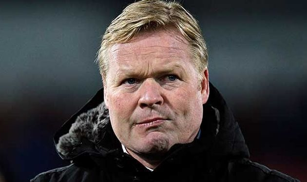

Моуринью: Джонс и Смоллинг выбыли надолго, по поводу Погба я ничего не знаю
Главный тренер «Манчестер Юнайтед» Жозе Моуринью рассказал о травмированных футболистах команды в преддверии матча с «Вест Бромвич Альбион» (1 апреля) в 30-м туре АПЛ. «Вы сами знаете, ...
31 марта 2017, пятница. 18:46. Football.News
Читать далее...
Телеканал «РЕН ТВ» принёс извинения Тарасову и болельщикам «Локомотива»
Телеканал «РЕН ТВ» принёс извинения полузащитнику «Локомотива» Дмитрию Тарасову и болельщикам команды относительно комментария, который якобы дал телеканалу российский футболист. Ранее «РЕН ТВ» опубликовал телефонную запись, на которой, как...
31 марта 2017, пятница. 18:46. Football.News
Читать далее...

Ибрагимович назвал себя Бенджамином Баттоном
Нападающий «Манчестер Юнайтед» Златан Ибрагимович опубликовал новую резонансную запись в «Инстаграме», выложив свою фотографию с заголовком «Бенджамин Баттон»...
31 марта 2017, пятница. 18:46. Football.News
Читать далее...

Дзагоев из-за повреждения пропустит матч ЦСКА с «Крыльями Советов»
Полузащитник ЦСКА Алан Дзагоев, который получил повреждение в товарищеском матче сборной России с командой Бельгии (3:3), пропустит ближайший домашний матч 21-го тура РФПЛ с «Крыльями Советов», который состоится 2 апреля, сообщает пресс-служба столичного клуба...
31 марта 2017, пятница. 18:46. Football.News
Читать далее...

Куман: победный голод фанатов «Эвертона» в матчах с «Ливерпулем» только растёт
Главный тренер «Эвертона» Рональд Куман поделился ожиданиями от гостевого матча 30-го тура чемпионата Англии с «Ливерпулем», который состоится 1 апреля...
31 марта 2017, пятница. 18:46. Football.News
Читать далее...

«Тоттенхэм» до конца апреля решит, будет ли играть на «Уэмбли» в сезоне-2017/18
«Тоттенхэм Хотспур» достиг договорённости с руководством стадиона «Уэмбли» о том, что до конца апреля клуб должен определиться по поводу того, проводить ли на арене домашние матчи в следующем сезоне, сообщает официальный сайт лондонцев...
31 марта 2017, пятница. 18:46. Football.News
Читать далее...